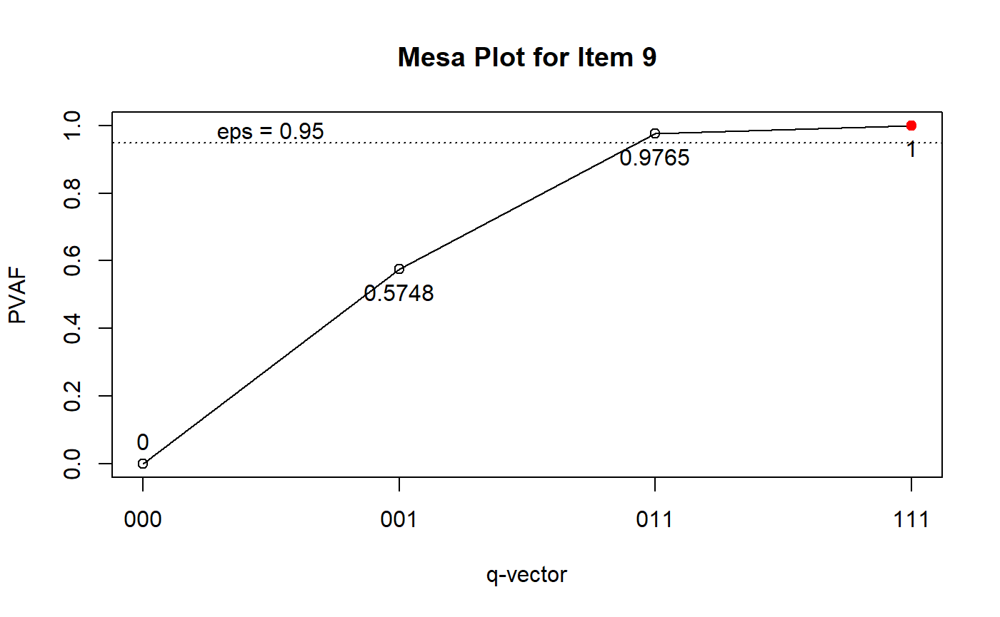
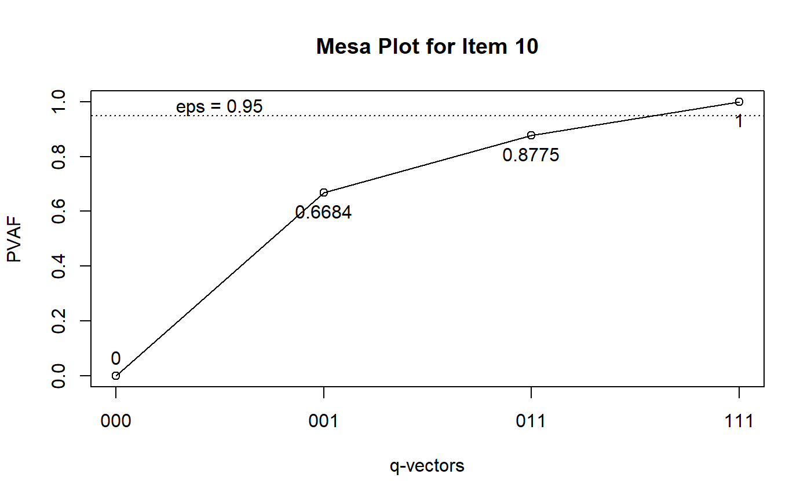
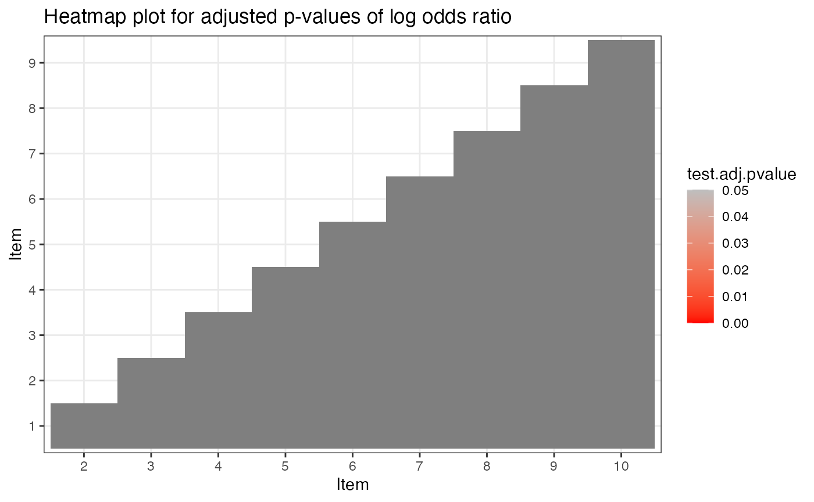
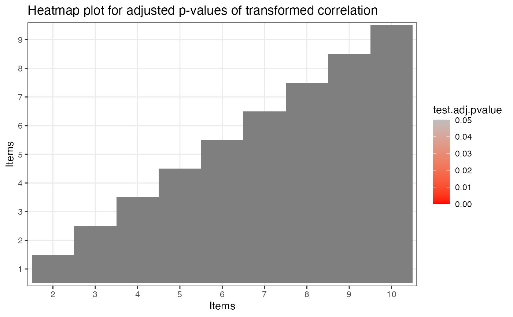

Model Estimation and Model Diagnostics
2026-07-07
Source:vignettes/OnlineExercises/CDMAnalysis_example.Rmd
CDMAnalysis_example.RmdIntroduction
This tutorial is created using R markdown and knitr. It illustrates how to use the GDINA R pacakge (version 2.12.1) for various CDM analyses.
Model Estimation
The following code estimates the G-DINA model. For extracting item and person parameters from G-DINA model, please see this tutorial.
## GDINA R Package (version 2.12.1; 2026-07-05)
## For tutorials, see https://wenchao-ma.github.io/GDINAQ-matrix validation
The Qval() function is used for Q-matrix validation. By default, it implements de la Torre and Chiu’s (2016) algorithm. The following example use the stepwise method (Ma & de la Torre, 2019) instead.
Qv <- Qval(est, method = "Wald")
Qv##
## Q-matrix validation based on Stepwise Wald test
##
## Suggested Q-matrix:
##
## A1 A2 A3
## 1 1 0 0
## 2 0 1 0
## 3 0 0 1
## 4 1 0 1
## 5 0 1 1
## 6 1 1 0
## 7 1 0 1
## 8 1 1 0
## 9 0* 1 1
## 10 1 1* 1
## Note: * denotes a modified element.To further examine the q-vectors that are suggested to be modified, you can draw the mesa plots (de la Torre & Ma, 2016):
plot(Qv, item = 9)
plot(Qv, item = 10)
We can also examine whether the G-DINA model with the suggested Q had better relative fit:
##
## Information Criteria and Likelihood Ratio Test
##
## #par logLik Deviance AIC AICc BIC CAIC SABIC
## est 45 -5952.73 11905.47 11995.47 11909.81 12216.32 12261.32 12073.39
## est.sugQ 45 -5918.21 11836.42 11926.42 11840.76 12147.27 12192.27 12004.35
## chisq df p-value
## est
## est.sugQItem-level model comparison
Based on the suggested Q-matrix, we perform item level model comparison using the Wald test (see de la Torre, 2011; de la Torre & Lee, 2013; Ma, Iaconangelo & de la Torre, 2016) to check whether any reduced CDMs can be used. Note that score test and likelihood ratio test (Sorrel, Abad, Olea, de la Torre, and Barrada, 2017; Sorrel, de la Torre, Abad, & Olea, 2017; Ma & de la Torre, 2018) may also be used.
mc <- modelcomp(est.sugQ)
mc##
## Item-level model selection:
##
## test statistic: Wald
## Decision rule: largest p value rule at 0.05 alpha level.
## Adjusted p values were based on holm correction.
##
## models pvalues adj.pvalues
## Item 1 GDINA
## Item 2 GDINA
## Item 3 GDINA
## Item 4 RRUM 0.3338 1
## Item 5 DINA 0.7991 1
## Item 6 DINO 0.8077 1
## Item 7 ACDM 0.6123 1
## Item 8 RRUM 0.32 1
## Item 9 LLM 0.9021 1
## Item 10 RRUM 0.5674 1We can fit the models suggested by the Wald test based on the rule in Ma, Iaconangelo and de la Torre (2016) and compare the combinations of CDMs with the G-DINA model:
est.wald <- GDINA(dat, sugQ, model = extract(mc,"selected.model")$models, verbose = 0)
anova(est.sugQ,est.wald)##
## Information Criteria and Likelihood Ratio Test
##
## #par logLik Deviance AIC AICc BIC CAIC SABIC
## est.sugQ 45 -5918.21 11836.42 11926.42 11840.76 12147.27 12192.27 12004.35
## est.wald 33 -5921.60 11843.20 11909.20 11845.52 12071.16 12104.16 11966.35
## chisq df p-value
## est.sugQ
## est.wald 6.78 12 0.87Absolute fit evaluation
The test level absolute fit include M2 statistic, RMSEA and SRMSR (Maydeu-Olivares, 3013; Liu, Tian, & Xin, 2016; Hansen, Cai, Monroe, & Li, 2016; Ma, 2019) and the item level absolute fit include log odds and transformed correlation (Chen, de la Torre, & Zhang, 2013), as well as heat plot for item pairs.
# test level absolute fit
mft <- modelfit(est.wald)
mft## Test-level Model Fit Evaluation
##
## Relative fit statistics:
## -2 log likelihood = 11843.2 ( number of parameters = 33 )
## AIC = 11909.2 BIC = 12071.16
## CAIC = 12104.16 SABIC = 11966.35
##
## Absolute fit statistics:
## M2 = 25.9761 df = 22 p = 0.2527
## RMSEA2 = 0.0134 with 90 % CI: [ 0 , 0.0308 ]
## SRMSR = 0.0222
# item level absolute fit
ift <- itemfit(est.wald)
ift## Summary of Item Fit Analysis
##
## Call:
## itemfit(GDINA.obj = est.wald)
##
## mean[stats] max[stats] max[z.stats] p-value adj.p-value
## Item mean score 0.0015 0.0034 0.2188 0.8268 1
## Transformed correlation 0.0175 0.0637 2.0111 0.0443 1
## Log odds ratio 0.0788 0.2818 1.9661 0.0493 1
## Note: p-value and adj.p-value are associated with max[z.stats].
## adj.p-values are based on the holm method.
summary(ift)##
## Item-level fit statistics
## z.prop pvalue[z.prop] max[z.r] pvalue.max[z.r] adj.pvalue.max[z.r]
## Item 1 0.0540 0.9569 0.3753 0.7074 1.0000
## Item 2 0.0197 0.9843 0.6419 0.5209 1.0000
## Item 3 0.0285 0.9773 1.5448 0.1224 1.0000
## Item 4 0.0756 0.9398 2.0111 0.0443 0.3989
## Item 5 0.1639 0.8698 2.0111 0.0443 0.3989
## Item 6 0.0645 0.9486 1.5821 0.1136 1.0000
## Item 7 0.1829 0.8548 1.2494 0.2115 1.0000
## Item 8 0.2188 0.8268 1.7705 0.0766 0.6898
## Item 9 0.0211 0.9832 1.7705 0.0766 0.6898
## Item 10 0.1639 0.8698 0.7503 0.4531 1.0000
## max[z.logOR] pvalue.max[z.logOR] adj.pvalue.max[z.logOR]
## Item 1 0.3818 0.7026 1.0000
## Item 2 0.6059 0.5446 1.0000
## Item 3 1.5440 0.1226 1.0000
## Item 4 1.9661 0.0493 0.4436
## Item 5 1.9661 0.0493 0.4436
## Item 6 1.6561 0.0977 0.8794
## Item 7 1.2404 0.2148 1.0000
## Item 8 1.7492 0.0803 0.7224
## Item 9 1.7492 0.0803 0.7224
## Item 10 0.7345 0.4627 1.0000
plot(ift)

The estimated latent class size can be obtained by
extract(est.wald,"posterior.prob")## 000 100 010 001 110 101 011
## [1,] 0.1268382 0.107374 0.1198433 0.1189953 0.1292129 0.1425195 0.1425261
## 111
## [1,] 0.1126907The tetrachoric correlation between attributes can be calculated by
# psych package needs to be installed
library(psych)
psych::tetrachoric(x = extract(est.wald,"attributepattern"),
weight = extract(est.wald,"posterior.prob"))## Call: psych::tetrachoric(x = extract(est.wald, "attributepattern"),
## weight = extract(est.wald, "posterior.prob"))
## tetrachoric correlation
## A1 A2 A3
## A1 1.00
## A2 -0.04 1.00
## A3 0.01 -0.03 1.00
##
## with tau of
## A1 A2 A3
## 0.021 -0.011 -0.042Classification Accuracy
The following code calculates the test-, pattern- and attribute-level classification accuracy indices based on GDINA estimates using approaches in Iaconangelo (2017) and Wang, Song, Chen, Meng, and Ding (2015).
CA(est.wald)## Classification Reliability (Accuracy and Consistency)
## =================================================
##
## Overall pattern-level accuracy (tau) = 0.7761
## Overall pattern-level consistency (gamma) = 0.6789
## -----------------------------------------------
## Pattern Accuracy Class.size
## 000 0.7630 0.1268
## 100 0.6913 0.1074
## 010 0.7483 0.1198
## 001 0.8048 0.1190
## 110 0.7644 0.1292
## 101 0.8127 0.1425
## 011 0.7954 0.1425
## 111 0.8134 0.1127
##
## Attribute level:
## -----------------------------------------------
## Attribute Prevelence Accuracy (tau_k) Consistency (gamma_k)
## A1 0.4918 0.9010 0.8524
## A2 0.5043 0.8962 0.8526
## A3 0.5167 0.9316 0.8988References
Chen, J., de la Torre, J., & Zhang, Z. (2013). Relative and Absolute Fit Evaluation in Cognitive Diagnosis Modeling. Journal of Educational Measurement, 50, 123-140.
de la Torre, J., & Lee, Y. S. (2013). Evaluating the wald test for item-level comparison of saturated and reduced models in cognitive diagnosis. Journal of Educational Measurement, 50, 355-373.
de la Torre, J., & Ma, W. (2016, August). Cognitive diagnosis modeling: A general framework approach and its implementation in R. A short course at the fourth conference on the statistical methods in Psychometrics, Columbia University, New York.
Hansen, M., Cai, L., Monroe, S., & Li, Z. (2016). Limited-information goodness-of-fit testing of diagnostic classification item response models. British Journal of Mathematical and Statistical Psychology. 69, 225–252.
Iaconangelo, C.(2017). Uses of Classification Error Probabilities in the Three-Step Approach to Estimating Cognitive Diagnosis Models. (Unpublished doctoral dissertation). New Brunswick, NJ: Rutgers University.
Liu, Y., Tian, W., & Xin, T. (2016). An Application of M2 Statistic to Evaluate the Fit of Cognitive Diagnostic Models. Journal of Educational and Behavioral Statistics, 41, 3-26.
Ma, W. (2019). Evaluating the fit of sequential G-DINA model using limited-information measures. Applied Psychological Measurement.
Ma, W. & de la Torre, J. (2018). Category-level model selection for the sequential G-DINA model. Journal of Educational and Behavorial Statistics.
Ma,W., & de la Torre, J. (2019). An empirical Q-matrix validation method for the sequential G-DINA model. British Journal of Mathematical and Statistical Psychology.
Ma, W., Iaconangelo, C., & de la Torre, J. (2016). Model similarity, model selection and attribute classification. Applied Psychological Measurement, 40, 200-217.
Maydeu-Olivares, A. (2013). Goodness-of-Fit Assessment of Item Response Theory Models. Measurement, 11, 71-101.
Sorrel, M. A., Abad, F. J., Olea, J., de la Torre, J., & Barrada, J. R. (2017). Inferential Item-Fit Evaluation in Cognitive Diagnosis Modeling. Applied Psychological Measurement, 41, 614-631.
Sorrel, M. A., de la Torre, J., Abad, F. J., & Olea, J. (2017). Two-Step Likelihood Ratio Test for Item-Level Model Comparison in Cognitive Diagnosis Models. Methodology, 13, 39-47.
Wang, W., Song, L., Chen, P., Meng, Y., & Ding, S. (2015). Attribute-Level and Pattern-Level Classification Consistency and Accuracy Indices for Cognitive Diagnostic Assessment. Journal of Educational Measurement, 52 , 457-476.
## R version 4.6.1 (2026-06-24)
## Platform: aarch64-apple-darwin23
## Running under: macOS Tahoe 26.5.1
##
## Matrix products: default
## BLAS: /Library/Frameworks/R.framework/Versions/4.6/Resources/lib/libRblas.0.dylib
## LAPACK: /Library/Frameworks/R.framework/Versions/4.6/Resources/lib/libRlapack.dylib; LAPACK version 3.12.1
##
## locale:
## [1] C.UTF-8/C.UTF-8/C.UTF-8/C/C.UTF-8/C.UTF-8
##
## time zone: America/Chicago
## tzcode source: internal
##
## attached base packages:
## [1] stats graphics grDevices utils datasets methods base
##
## other attached packages:
## [1] psych_2.6.5 GDINA_2.12.1
##
## loaded via a namespace (and not attached):
## [1] generics_0.1.4 sass_0.4.10 future_1.70.0
## [4] lattice_0.22-9 listenv_1.0.0 digest_0.6.39
## [7] magrittr_2.0.5 RColorBrewer_1.1-3 evaluate_1.0.5
## [10] grid_4.6.1 iterators_1.0.14 fastmap_1.2.0
## [13] foreach_1.5.2 jsonlite_2.0.0 promises_1.5.0
## [16] scales_1.4.0 truncnorm_1.0-9 codetools_0.2-20
## [19] numDeriv_2016.8-1.1 textshaping_1.0.5 jquerylib_0.1.4
## [22] shinydashboard_0.7.3 mnormt_2.1.2 cli_3.6.6
## [25] shiny_1.14.0 rlang_1.3.0 parallelly_1.48.0
## [28] future.apply_1.20.2 withr_3.0.3 cachem_1.1.0
## [31] yaml_2.3.12 otel_0.2.0 tools_4.6.1
## [34] parallel_4.6.1 nloptr_2.2.1 dplyr_1.2.1
## [37] ggplot2_4.0.3 httpuv_1.6.17 globals_0.19.1
## [40] vctrs_0.7.3 R6_2.6.1 mime_0.13
## [43] stats4_4.6.1 lifecycle_1.0.5 fs_2.1.0
## [46] htmlwidgets_1.6.4 MASS_7.3-65 Rsolnp_2.0.1
## [49] ragg_1.5.2 pkgconfig_2.0.3 desc_1.4.3
## [52] pillar_1.11.1 pkgdown_2.2.0 bslib_0.11.0
## [55] later_1.4.8 gtable_0.3.6 glue_1.8.1
## [58] Rcpp_1.1.2 systemfonts_1.3.2 tidyselect_1.2.1
## [61] tibble_3.3.1 xfun_0.59 knitr_1.51
## [64] farver_2.1.2 xtable_1.8-8 nlme_3.1-169
## [67] htmltools_0.5.9 labeling_0.4.3 rmarkdown_2.31
## [70] compiler_4.6.1 S7_0.2.2 alabama_2025.1.0